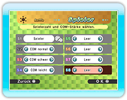
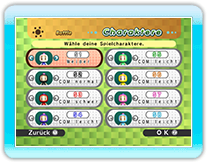

10 |
Kampf-Setup |
 |
|
Ein Kampf wird wie folgt gespielt.
Lege die Anzahl der Spieler fest und setze den Schwierigkeitsgrad für COM-Charaktere auf „leicht“, „normal“ oder „schwer“. Wähle „Leer“, wenn 1 Charakter weniger teilnehmen soll.
 Drücke auf
* Du kannst auch Gast-Miis auswählen, die Kampfergebnisse werden dann jedoch nicht gespeichert. * Ein auf der aktiven Wii-Fernbedienung gespeichertes Mii kann erst nach Auswahl eines Gast-Miis ausgewählt werden.
Die Kampfregeln kannst du aus 6 verschiedenen Typen auswählen.
* Bei einem Ranglistenspiel in einem Wi-Fi-Kampf kannst du die Funktionen „TEAMS“ und „ÜBERRASCHUNG“ nicht auswählen.
Du kannst nur dann Teams bilden, wenn du auf dem Bildschirm „Regeln“ die Option „TEAMS“ aktiviert hast.
Wähle eine Stufe, auf der du spielen möchtest, und drücke oben oder unten auf dem
Drücke oben, unten, links oder rechts auf dem
Überprüfe deine gewählten Einstellungen, und lege anschließend Objekte und Handicaps fest.

Wenn ein Kampf beendet ist, wird der Bildschirm „Ergebnisse“ angezeigt. Im Modus „Trophäe“ werden alle Siege angezeigt, im Modus „Punkte“ die Gesamtpunktzahl. Sobald die festgelegte Anzahl von Runden gespielt wurde, wird der Sieger verkündet.
|
|||||||||||||||||||||||||||||||||||||||||||||||||||||||||||||||||||||||||||||||||||||||||||||||||||||||||||||||||||||||||||||||||||||||||||||||||||||||||||||||||||||||
 |
 |
 |